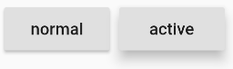
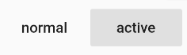
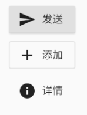

3.4 按钮¶
3.4.1 Material组件库中的按钮¶
Material 组件库中提供了多种按钮组件如RaisedButton、FlatButton、OutlineButton等，它们都是直接或间接对RawMaterialButton组件的包装定制，所以他们大多数属性都和RawMaterialButton一样。在介绍各个按钮时我们先介绍其默认外观，而按钮的外观大都可以通过属性来自定义，我们在后面统一介绍这些属性。另外，所有Material 库中的按钮都有如下相同点：
按下时都会有“水波动画”（又称“涟漪动画”，就是点击时按钮上会出现水波荡漾的动画）。
有一个
onPressed属性来设置点击回调，当按钮按下时会执行该回调，如果不提供该回调则按钮会处于禁用状态，禁用状态不响应用户点击。
RaisedButton¶
RaisedButton 即”漂浮”按钮，它默认带有阴影和灰色背景。按下后，阴影会变大，如图3-10所示：

使用RaisedButton非常简单，如：
RaisedButton(
child: Text("normal"),
onPressed: () {},
);
FlatButton¶
FlatButton即扁平按钮，默认背景透明并不带阴影。按下后，会有背景色，如图3-11所示：

使用FlatButton也很简单，代码如下：
FlatButton(
child: Text("normal"),
onPressed: () {},
)
OutlineButton¶
OutlineButton默认有一个边框，不带阴影且背景透明。按下后，边框颜色会变亮、同时出现背景和阴影(较弱)，如图3-12所示：

使用OutlineButton也很简单，代码如下：
OutlineButton(
child: Text("normal"),
onPressed: () {},
)
IconButton¶
IconButton是一个可点击的Icon，不包括文字，默认没有背景，点击后会出现背景，如图3-13所示：

代码如下：
IconButton(
icon: Icon(Icons.thumb_up),
onPressed: () {},
)
带图标的按钮¶
RaisedButton、FlatButton、OutlineButton都有一个icon 构造函数，通过它可以轻松创建带图标的按钮，如图3-14所示：

代码如下：
RaisedButton.icon(
icon: Icon(Icons.send),
label: Text("发送"),
onPressed: _onPressed,
),
OutlineButton.icon(
icon: Icon(Icons.add),
label: Text("添加"),
onPressed: _onPressed,
),
FlatButton.icon(
icon: Icon(Icons.info),
label: Text("详情"),
onPressed: _onPressed,
),
3.4.2 自定义按钮外观¶
按钮外观可以通过其属性来定义，不同按钮属性大同小异，我们以FlatButton为例，介绍一下常见的按钮属性，详细的信息可以查看API文档。
const FlatButton({
...
@required this.onPressed, //按钮点击回调
this.textColor, //按钮文字颜色
this.disabledTextColor, //按钮禁用时的文字颜色
this.color, //按钮背景颜色
this.disabledColor,//按钮禁用时的背景颜色
this.highlightColor, //按钮按下时的背景颜色
this.splashColor, //点击时，水波动画中水波的颜色
this.colorBrightness,//按钮主题，默认是浅色主题
this.padding, //按钮的填充
this.shape, //外形
@required this.child, //按钮的内容
})
其中大多数属性名都是自解释的，我们不赘述。下面我们通过一个示例来看看如何自定义按钮。
示例¶
定义一个背景蓝色，两边圆角的按钮。效果如图3-15所示：

代码如下：
FlatButton(
color: Colors.blue,
highlightColor: Colors.blue[700],
colorBrightness: Brightness.dark,
splashColor: Colors.grey,
child: Text("Submit"),
shape:RoundedRectangleBorder(borderRadius: BorderRadius.circular(20.0)),
onPressed: () {},
)
很简单吧，在上面的代码中，我们主要通过shape来指定其外形为一个圆角矩形。因为按钮背景是蓝色(深色)，我们需要指定按钮主题colorBrightness为Brightness.dark，这是为了保证按钮文字颜色为浅色。
Flutter 中没有提供去除背景的设置，假若我们需要去除背景，则可以通过将背景颜色设置为全透明来实现。对应上面的代码，便是将 color: Colors.blue 替换为 color: Color(0x000000)。
细心的读者可能会发现这个按钮没有阴影(点击之后也没有)，这样会显得没有质感。其实这也很容易，将上面的FlatButton换成RaisedButton就行，其它代码不用改（这里 color 也不做更改），换了之后的效果如图3-16所示：
是不是有质感了！之所以会这样，是因为RaisedButton默认有配置阴影：
const RaisedButton({
...
this.elevation = 2.0, //正常状态下的阴影
this.highlightElevation = 8.0,//按下时的阴影
this.disabledElevation = 0.0,// 禁用时的阴影
...
}
值得注意的是，在Material 组件库中，我们会在很多组件中见到elevation相关的属性，它们都是用来控制阴影的，这是因为阴影在Material设计风格中是一种很重要的表现形式，以后在介绍其它组件时，便不再赘述。
如果我们想实现一个背景渐变的圆角按钮，按钮有没有相应的属性呢？答案是否定的，但是，我们可以通过其它方式来实现，我们将在后面”自定义组件”一章中实现。